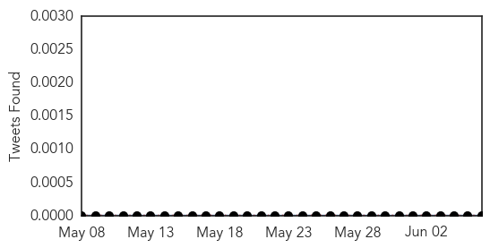
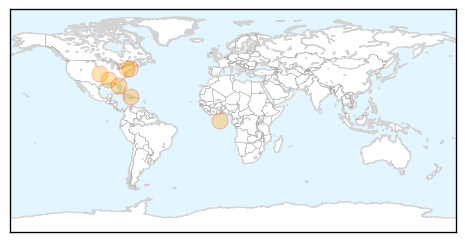
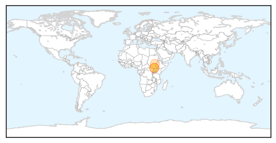
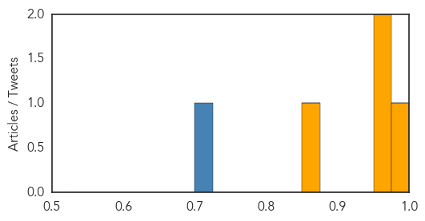

Chikungunya
30-Day Web Trend
4 alerts, 5 warnings

30-Day Twitter Trend
1 alerts, 0 warnings

Article Locations
Article Confidences

Top Articles:
- 0.992
- First case of chikungunya, a mosquito born virus, identified in Duval County
- 0.981
- Joplin rallies to send load of acetaminophen to Haitian village
- 0.969
- Health officials warn of Chikungunya virus
- 0.934
- Chikungunya Virus Spreads in Caribbean
- 0.920
- Joplin rallies to send load of acetaminophen to Haitian village
- 0.874
- Buzzing to a City Near You: Chikungunya Virus
- 0.818
- Protect Yourself from Dangerous and Disease-Carrying Bugs
Top Tweets:
-
No tweets found for Jun 06, 2014
Cholera
30-Day Web Trend
11 alerts, 5 warnings

30-Day Twitter Trend
0 alerts, 0 warnings

Article Locations
Article Confidences
Top Articles:
Top Tweets:
- 0.709
- RT:"Relief agencies have vaccinated approximately 163K people in SouthSudan to slow a growing cholera outbreak" -thks to USAID!